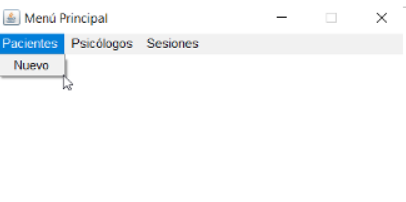
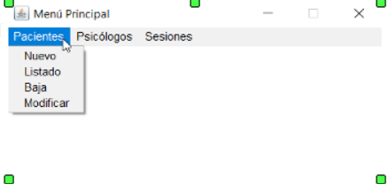

Si las credenciales introducidas son correctas, se abrirá el menú principal. En la barra de menú aparecerán las distintas tablas sobre las que podemos actuar. Al hacer click en el menú de cada tabla, se abrirán las distintas opciones que tenemos. El programa distingue entre dos tipos de usuarios: básico y administrador. Si usted es un usuario básico, solo verá la opción 'Nuevo', ya que solo tiene permitido dar elementos de alta.
Por otra parte, si usted es un usuario administrador, además de dar de alta, usted podrá ver el listado de elementos, modificarlos y darlos de baja, por lo que verá el resto de opciones del menú.
